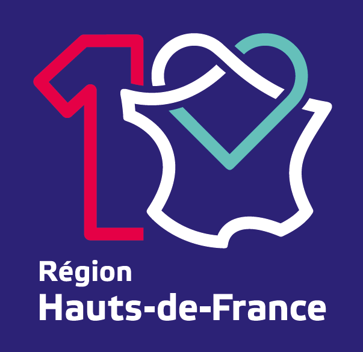
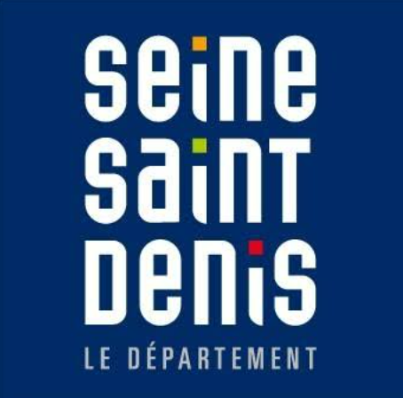
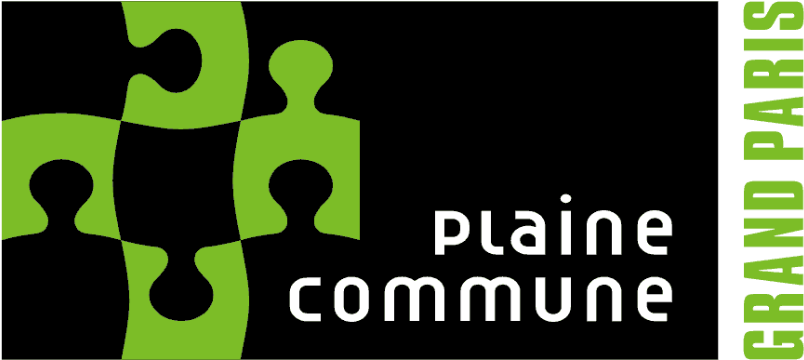

Profil
Géomaticien, j'ai un fort intérêt pour la gestion et l'analyse spatiale et environnementale. Diplômé d'un master de géomatique, j'ai passé deux ans en apprentissage au service SIG de la Région Hauts-de-France : j'ai conçu des portails cartographiques et des applications web métier, administré une base de données PostGIS et travaillé sur des données de réseaux. Je combine solutions Esri et open source, de la collecte de terrain à la restitution.
Expériences professionnelles

Géomaticien apprenti
Août 2024 – Août 2026
Gestion patrimoniale et programmation, ports de Boulogne-sur-Mer et Calais, Région Hauts-de-France · Calais / Lille
- Portails cartographiques pour des services différents, dont LariPort (espèces protégées, cadre ERC : Éviter, Réduire, Compenser). ArcGIS Online, Experience Builder
- Base SIG patrimoniale des réseaux gérés par l'administration (PostGIS) : structuration, mise à jour, contrôle qualité et fiabilisation des données.
- Veille technologique 2D vers 3D des données de réseaux pour un jumeau numérique du port : contrôle des normes de levé (classe A, réglementation DT/DICT, représentation sous AutoCAD).
- Application web de renseignement des opérations portuaires, utilisée aussi par les partenaires réseaux pour déclarer au SIG leurs travaux (logique DT/DICT). Django, PostGIS, Leaflet
- Levés GPS et détection de réseaux sur le terrain ; documentation et accompagnement des utilisateurs.

Chargé d'étude stagiaire
Mars 2024 – Sept. 2024
Conseil départemental de la Seine-Saint-Denis, Direction des données, des études et des connaissances · Bobigny
- Étude sur l'interculturalité (Biennale 93) : enquêtes quantitatives et qualitatives, traitement de données, livrables.
- Diagnostics territoriaux de plusieurs communes, avec l'ODDS 93 (Observatoire départemental des données sociales).

Gestionnaire géomaticien
Août 2023 – Sept. 2023
Observatoire de l'EPT Plaine Commune, projet LudoSI · Saint-Denis
- Collecte sur le terrain de données des aires de jeux communaux pour un outil métier destiné aux contrôleurs d'aires de jeux. ArcGIS Field Maps
Autres expériences : chargé d'étude stagiaire (EPT Plaine Commune) · vacataire Convivialité (Ville de Massy) · chauffeur livreur de nuit (Ciblex)
Projets
Service parcellaire communal, Le Pré-Saint-Gervais
Base PostGIS construite à partir de données ouvertes (cadastre, adresses, bâti), fonctions PL/pgSQL, API REST, portail cartographique. PostgreSQL/PostGIS, Leaflet
Évolution des contours IRIS, millésimes 2024 et 2025
Flux ETL (extraction, transformation, chargement) comparant deux versions d'une base : disparus, nouveaux, stables, modifiés, rapport HTML. FME, IGN / INSEE
Outil ArcGIS Pro, accessibilité des espaces verts
Outil de géotraitement en Python : indice d'accessibilité aux espaces verts par commune via le réseau routier (zone tampon paramétrable). ArcGIS Pro, ArcPy
3h30 au départ de Paris, analyse comparée de cinq modes de transport (2026)
Destinations atteignables selon cinq modes, à partir de données ouvertes : chaîne Python, API de routage, storymap ArcGIS, dépôt GitHub. Python, QGIS
Centres d'intérêt
Volleyball, basketball · Lecture (romans historiques) · Animateur Fresque du climat